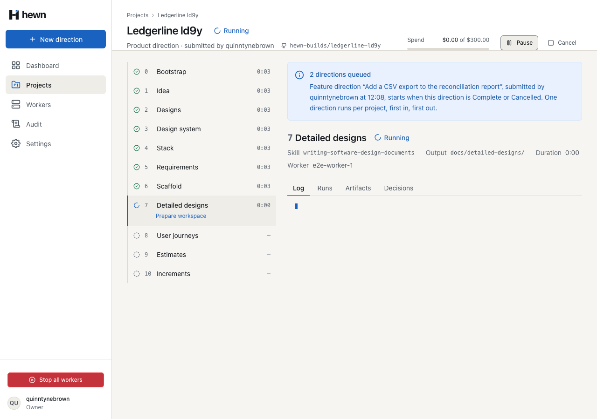
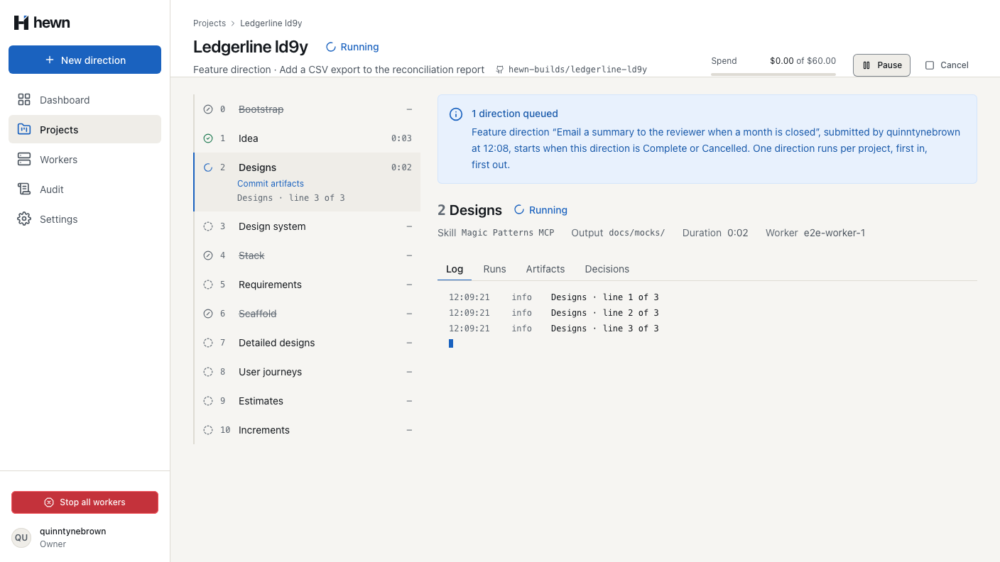
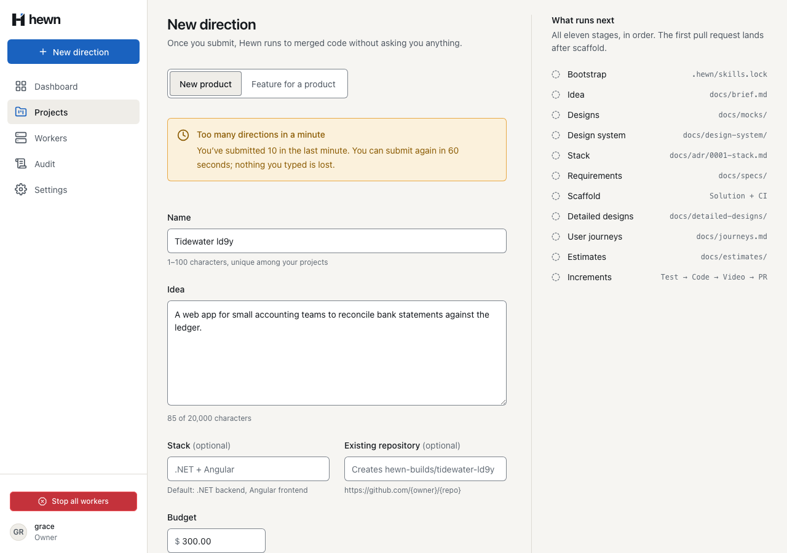
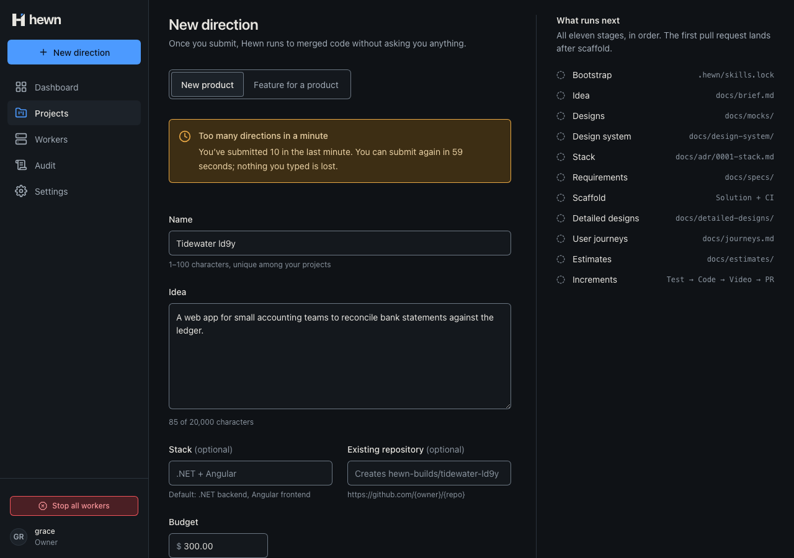
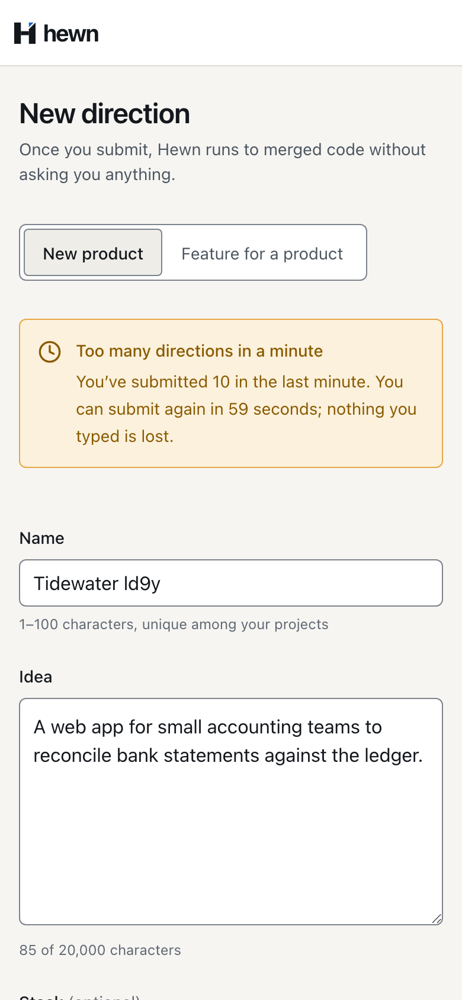
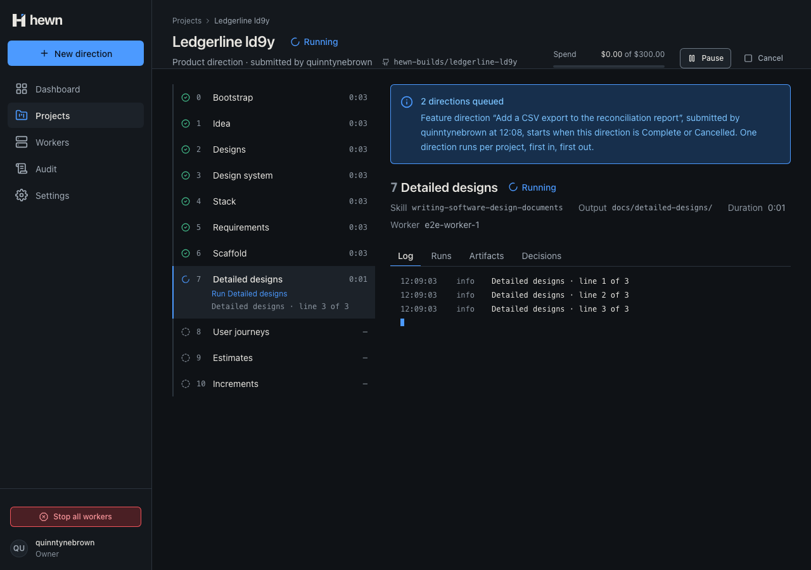
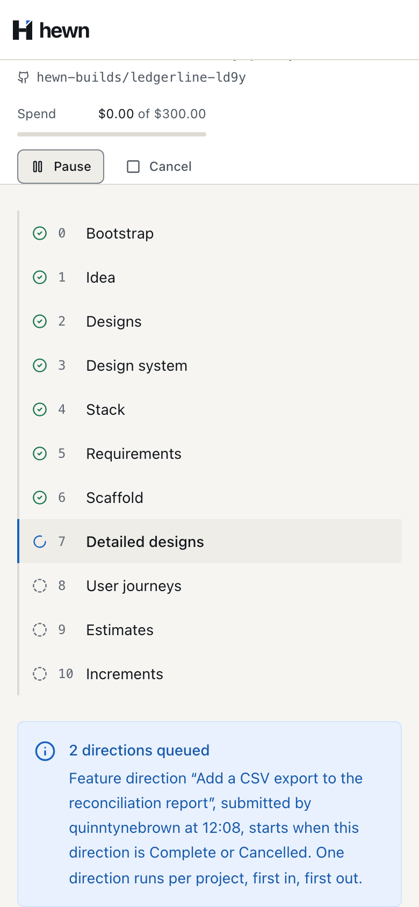

Submit the next idea now; Hewn holds it in line and starts it by itself.


public Direction? ActiveDirection =>
_directions.Where(d => d.IsActive).OrderBy(d => d.Status == DirectionStatus.Queued).ThenBy(d => d.SubmittedAt).FirstOrDefault();
/// <summary>True once the first product direction is Complete; a feature submitted earlier waits behind it.</summary>
public bool FirstDirectionComplete =>
_directions.OrderBy(d => d.SubmittedAt).FirstOrDefault()?.Status == DirectionStatus.Complete;
/// <summary>
/// Adds a feature direction (L2-005). Returns true when it can start now; false when another direction is
/// active and it waits in the queue, first in, first out (L2-004 AC4).
/// </summary>
public bool AddFeatureDirection(string idea, decimal budgetUsd, string submittedBy, DateTimeOffset now, out Direction direction)
{
var startsNow = ActiveDirection is null;
direction = Direction.Feature(Id, idea, budgetUsd, submittedBy, now);
_directions.Add(direction);
await AppendDirectionAsync(direction, cancellationToken);
if (project.NextQueuedDirection(direction.Id) is { } queued)
{
// One direction per project, first in, first out (L2-004 AC4, L2-005 AC4).
await StartDirectionAsync(project, queued, cancellationToken);
return;
}
project.ChangeStatus(ProjectStatus.Idle);
await AppendProjectAsync(project, cancellationToken);
}
var now = clock.GetUtcNow();
var since = now - Window;
var recent = await db.Directions.AsNoTracking()
.Where(d => d.SubmittedBy == user.Login && d.SubmittedAt > since)
.OrderBy(d => d.SubmittedAt)
.Select(d => d.SubmittedAt)
.ToListAsync(cancellationToken);
if (recent.Count >= perMinute)
{
var opens = recent[recent.Count - perMinute] + Window;
var wait = Math.Max(1, (int)Math.Ceiling((opens - now).TotalSeconds));
throw new TooManyRequestsException(
"rate_limited",
$"You’ve submitted {recent.Count} directions in the last minute. You can submit again in {wait} seconds.",
perMinute,
wait);
private static ProblemDetails TooMany(HttpContext httpContext, TooManyRequestsException e)
{
httpContext.Response.Headers.RetryAfter = e.RetryAfterSeconds.ToString(System.Globalization.CultureInfo.InvariantCulture);
return new ProblemDetails
{
Status = StatusCodes.Status429TooManyRequests,
Title = e.Message,
Extensions = { ["code"] = e.Code, ["limit"] = e.Limit, ["retryAfterSeconds"] = e.RetryAfterSeconds },
};
}
}
_factory.Clock.Advance(TimeSpan.FromSeconds(49));
var early = await SubmitProductAsync(owner, "Project 11");
Assert.Equal(HttpStatusCode.TooManyRequests, early.StatusCode);
Assert.Equal(1, (await HewnClient.ReadJsonAsync(early)).GetProperty("retryAfterSeconds").GetInt32());
_factory.Clock.Advance(TimeSpan.FromSeconds(1));
Assert.Equal(HttpStatusCode.Created, (await SubmitProductAsync(owner, "Project 11")).StatusCode);
// Project 2 is still inside the minute, and Project 11 just joined it.
Assert.Equal(HttpStatusCode.TooManyRequests, (await SubmitProductAsync(owner, "Project 12")).StatusCode);
error: (error: unknown) => {
this.submitting.set(false);
if (error instanceof FieldErrorsProblem) {
this.problem.set(error);
return;
}
this.problem.set(null);
if (error instanceof RateLimitedProblem) {
this.rateLimited.set(rateLimitedText(error.limit, error.retryAfterSeconds));
clearTimeout(this.rateLimitTimer);
this.rateLimitTimer = setTimeout(
() => this.rateLimited.set(null),
error.retryAfterSeconds * 1000,
);
return;



_factory.Clock.Advance(TimeSpan.FromSeconds(2));
var refused = await SubmitFeatureAsync(owner, projectId);
Assert.Equal(HttpStatusCode.TooManyRequests, refused.StatusCode);
var problem = await HewnClient.ReadJsonAsync(refused);
Assert.Equal("rate_limited", problem.GetProperty("code").GetString());
Assert.Equal(10, problem.GetProperty("limit").GetInt32());
// The first submission leaves the minute 60 - 20 = 40 seconds from now.
Assert.Equal(40, problem.GetProperty("retryAfterSeconds").GetInt32());
Assert.Equal(TimeSpan.FromSeconds(40), refused.Headers.RetryAfter?.Delta);
Assert.Equal(10, await DirectionCountAsync());
Assert.Equal(HttpStatusCode.TooManyRequests, (await SubmitProductAsync(owner, "Project 11")).StatusCode);
4 new, real API
4 new frontend
3 new, one with a real worker
const changes = (await project.events())
.filter((e) => e.type === 'DirectionChanged')
.map((e) => `${String(e.payload['directionId']).slice(0, 8)}:${String(e.payload['status'])}`);
const directions = (
(await (await page.request.get(`/api/projects/${project.projectIdFromUrl()}`)).json()) as {
directions: { id: string; kind: string; idea: string }[];
}
).directions;
const [product, first, second] = directions.map((d) => d.id.slice(0, 8));
expect(directions.map((d) => d.kind)).toEqual(['Product', 'Feature', 'Feature']);
// First in, first out: each starts only after the one before it is Complete.
expect(changes.indexOf(`${product}:Complete`)).toBeLessThan(changes.indexOf(`${first}:Running`));
expect(changes.indexOf(`${first}:Complete`)).toBeLessThan(changes.indexOf(`${second}:Running`));
expect(changes.indexOf(`${first}:Complete`)).toBeGreaterThan(-1);
});

